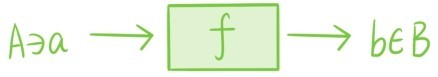
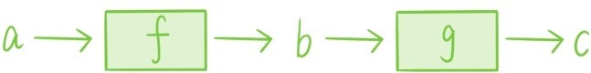
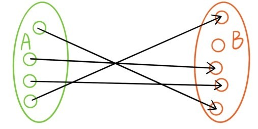
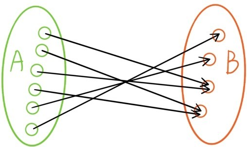

——把小球放入抽屉
之前讲过，每一个函数都可以看成是一个输入实数后会自动输出实数的机器，每一个数列则可以看成是一个输入正整数后会自动输出实数的机器。

从集合A到集合B的映射f:A→B也可以看成一个加工机器。往这台机器中输入集合A中的任何一个元素a，它都会确定地输出集合B中的一个元素f(a)=b，我们称b为a在映射f下的像。符号f(a)表示这个输出的元素是完全由a决定的，两次输入同一个元素却输出不同元素的事情是不会发生的。
比如函数y=x2+1就可以看成是从R到R的映射，函数y=可以看成是从[0,+∞)到R的映射，每个数列则都可以看成是从正整数集合Z+到R的一个映射。实数的加法，减法和乘法运算则可以看成是3个从R×R到R的映射，(a,b)∈R×R在这3个映射下的像分别是a+b，a-b和ab。如果将所有非零实数构成的集合记作R*，实数的除法运算则可以看成是一个从R×R*到R的映射，(a,b)∈R×R*在映射下的像是 。如果将所有平面向量构成的集合记作V，那么实数与向量的数乘运算可以看成是从R×V到V的一个映射，向量内积运算可以看成是从V×V到R的一个映射。平面的平移变换，旋转变换，伸缩变换，反射变换都可以看成是R×R到R×R的映射，例如平面的平移变换
总之，一切函数，一切运算，一切平面交换都是映射！
从集合A到集合B的一个映射f:A→B也可以看成是一种对应关系。在这种对应关系之下，对于A中的每一个元素a，都存在B中的唯一一个元素f(a)与其相对应。如果再给定一个从集合B到集合C的映射g:B→C，我们就可以构造一个从集合A到集合C的映射g∘f：A→C
我们称g∘f是f和g的复合映射，这是复合函数的推广。

有限集之间的映射还可以用箭头图表示，对于A中的每一个元素a恰有一个从a到f(a)的箭头：

我们称一个映射f:A→B是单射，如果A中任意两个不同元素在映射f下的像也是不同的。上图所表示的映射就是单射，因为没有两个箭头是指向同一个元素的。称一个映射f:A→B是满射，如果B中每个元素都是A中某个元素在映射f下的像。下图所表示的映射就是满射，因为对于B中每个元素，都至少有一个箭头指向它。

如果把集合A中的元素看成是小球，集合B中的元素看成是抽屉，则一个映射f:A→B可以看成是把A中的所有小球都放入B中的抽屉里，f是单射等价于每个抽屉最多放一个小球，f是满射等价于每个抽屉都有放小球。
我们称一个映射f:A→B是一一对应，如果它既是单射又是满射。通俗地解释，一一对应就是这样一种关系，对于A中任何元素，都有B中唯一一个元素与其对应，反过来，对于B中任何元素，也都有A中唯一一个元素与其对应。若两个有限集A和B之间存在一一对应关系f:A→B，则A和B的元素个数是相等的。
对于任何集合A和B，都存在一个从A×B到B×A的自然一一对应
A×B→B×A
对于任何集合A，B和C，都存在一个从(A×B)×C到A×(B×C)的自然一一对应
当A，B和C都是有限集时，这两个一一对应给出自然数的乘法交换律和乘法结合律的集合解释。
提问时间
11.3.1 证明：若映射f:A→B和映射g:B→C都是单（满）射，则复合映射g∘f也是单（满）射。
11.3.2 证明：若从一个n元集合A到另一个n元集合B的映射f:A→B是单（满）射，则f一定是一一对应。